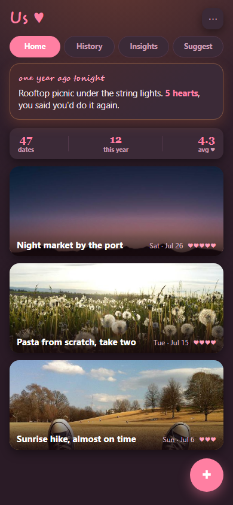
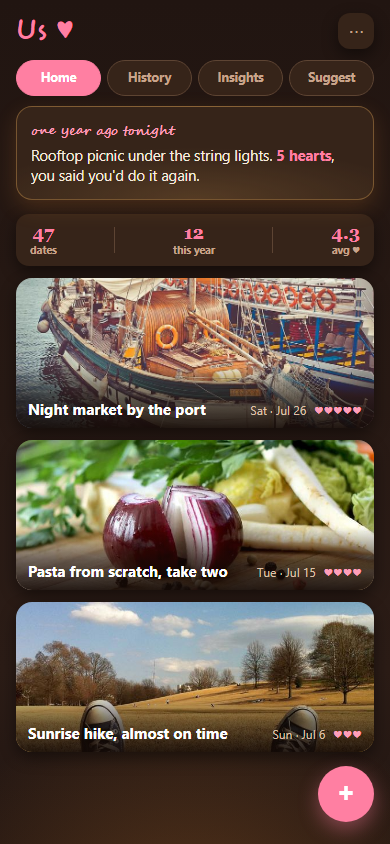
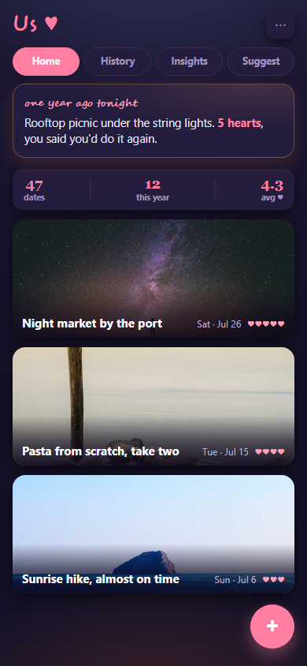
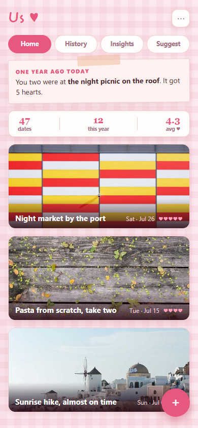
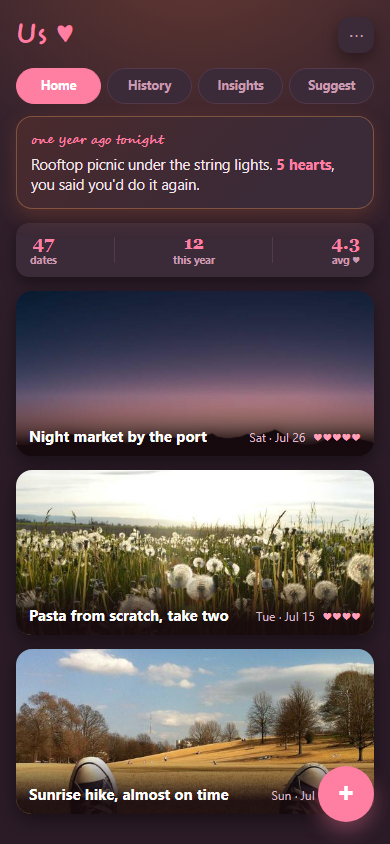
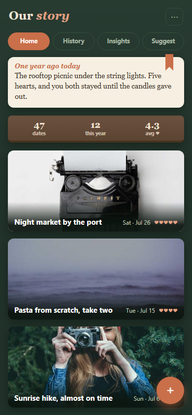
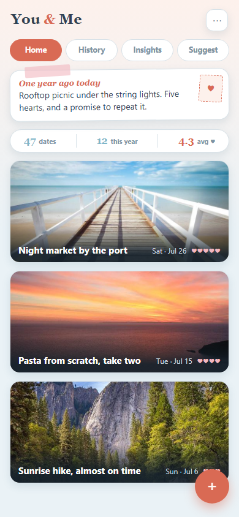

Redesign directions · Home view
Round 2: three variations of the chosen Golden Hour direction. Click a caption to open the live mock.

B1 · Plum Dusk
Golden Hour on the existing plum tokens; amber is ambience only. Critic's pick.

B2 · Candlelight
Espresso-brown base, candle-gold glow rising from below. Warmer, more intimate.

B3 · Blue Hour
Navy-twilight base (existing navy theme family), warm city-light glow low.
Round 1 · original four directions

A · Love Letters
Pink gingham scrapbook, raspberry accent, taped memory note. Light theme.

B · Golden Hour
Current plum tokens + sunset amber glow layer, raspberry interactive accent. Dark theme.

C · Reading Nook
Botanical green + walnut + cream serif, terracotta accent. Token migration noted in file.

D · Riviera
Sky blue + blush + terracotta postcard pastels. Token migration noted in file.